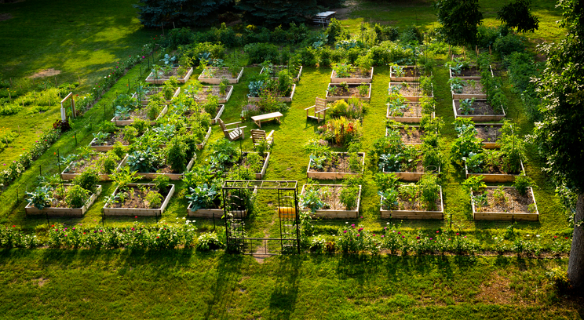
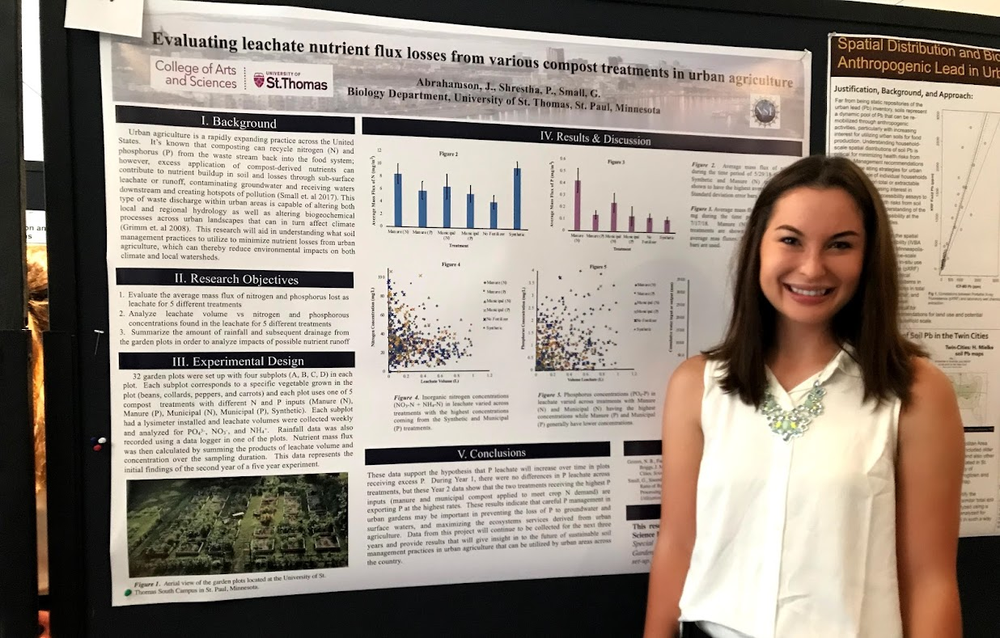

Ecology & Nutrient Cycling
This research, under the direction of Dr. Gaston Small and Dr. Paliza Shrestha, focused on stormwater management and sustainable design for bioretention via rain gardens in addition to research on urban food systems. This research involved statistical analysis of soil data over time and led to projects involving numerical modeling of nutrient cycling using Stella Architect modeling software in one of my Environmental Science capstone courses. It was through this project that I developed an interest in numerical modeling of ecohydrological processes. My team and I competed with this research at the EPA P3 Sustainable Design Competition in Boston, Massachusetts June 2019 where our team was successfully awarded the EPA P3 Grant. I also served as a coauthor on a publication for this project that can be found in the journal Water.
Project Links:
- Efficacy of Spent Lime as a Soil Amendment for Nutrient Retention Green Stormwater Infrastructure (Shrestha et al., 2019)
- Urban Food Symposium: Evaluating Leachate Nutrient Flux Losses from Various Compost Treatments in Urban Agriculture